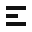

A · gewählt
Drei Zeilen auf Schwarz. Die mittlere bricht ab. App-Icon für iPad und Desktop.
Easy Writing
Weißes Zeichen auf #111111. Drei Zeilen, die mittlere bricht ab —
mehr Satz als Buchstabe. iPad und Desktop nutzen dasselbe Master, ohne Rundung im Asset.
Drei Zeilen auf Schwarz. Die mittlere bricht ab. App-Icon für iPad und Desktop.
Dasselbe E, Blockcursor hinter der mittleren Zeile. Mehr Editor, etwas unruhiger bei 16px.
Nur Zeilen. Sehr ehrlich, näher an Notes/iA Writer, weniger eigen als Buchstabe.

Links dunkel (Empfehlung), rechts hell.
Glyph: brand/mark.svg (currentColor) · Icon:
brand/icon.svg · Hell: brand/icon-light.svg